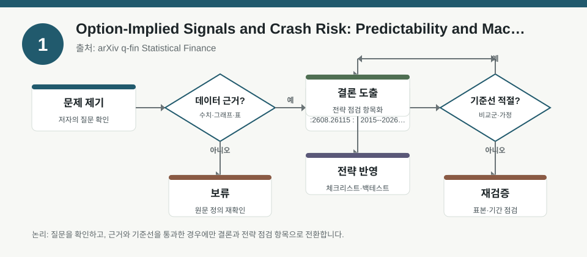
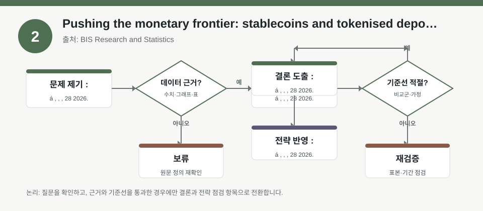
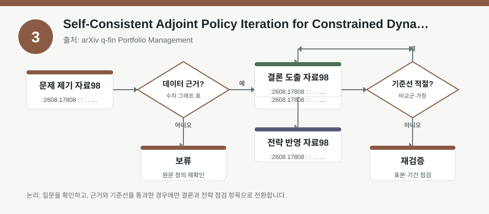

핵심 요약
- 결론: 이번 자료들은 옵션 신호, 통화 프런티어, 제약 포함 포트폴리오 최적화를 통해 한국 투자자가 팩터 노출, 유동성, 금리·환율 민감도를 점검하는 데 참고할 수 있습니다.
- 원칙: 수치와 효과는 각 원문에서 표본, 시기, 가정이 다르므로 백테스트 조건과 정책 맥락을 먼저 검수해야 합니다.
주목할 자료
| 번호 | 자료 | 출처 | 원문 | 핵심 내용 | 데이터 포인트 | 리스크/한계 |
|---|---|---|---|---|---|---|
| 1 | Option-Implied Signals and Crash Risk: Predictability and Machine-Learning Evidence from U.S. Equity Options | arXiv q-fin Statistical Finance | 원문 보기 | 미국 주식옵션에서 도출한 암시적 신호로 급락 위험의 예측 가능성을 재검토한 연구입니다. | 2015~2026, 1,236만 firm-day, 10,026개 기초자산, 구간별 레짐 분리 | 레짐 구분과 머신러닝 성능은 표본·거래비용·재현성 검증이 필요합니다. |
| 2 | Pushing the monetary frontier: stablecoins and tokenised deposits | BIS Research and Statistics | 원문 보기 | 스테이블코인과 토큰화 예금을 통화 시스템의 경계에서 비교하며 지급결제·안정성·규제 이슈를 다룹니다. | BIS 연설, 제도·결제 인프라·규제 프레임 중심 | 정책 메시지이므로 시장 수치보다 제도 변화와 관할권별 규제 차이를 확인해야 합니다. |
| 3 | Self-Consistent Adjoint Policy Iteration for Constrained Dynamic Portfolio Choice | arXiv q-fin Portfolio Management | 원문 보기 | 예측가능 수익과 볼록 제약이 있는 동적 포트폴리오 선택을 시뮬레이션 기반 정책 반복으로 푸는 방법론입니다. | 연속시간, 제약조건, adjoint-HJB 보정, 시뮬레이션 기반 최적화 | 모형 가정·제약 설정·수렴성·샘플 외 성과를 별도 검증해야 합니다. |
자료별 상세
1. Option-Implied Signals and Crash Risk: Predictability and Machine-Learning Evidence from U.S. Equity Options

- 핵심: 옵션 내재 신호가 급락 위험을 설명할 수 있는지, 그리고 그 관계가 레짐별로 달라지는지를 다시 본 연구입니다.
- 데이터 포인트: 2015~2026년 미국 개별주 옵션 기반 1,236만 firm-day와 10,026개 기초자산이 핵심 표본입니다.
- 리스크: 급변장 구간과 저변동 구간을 나눠 본 만큼, 한국 시장에 적용할 때도 KOSPI·KOSDAQ의 변동성 국면 전환을 별도 확인해야 합니다.
- 투자전략 반영 예시: 한국 투자자는 보유 종목의 섹터별 베타, 환율 민감도, 변동성 급등 시 옵션·대체지표가 어떻게 움직였는지 점검하는 체크리스트로 활용할 수 있습니다.
- 실행 예시: 과거 KOSPI 변동성 급등 구간을 따로 떼어 옵션 유사 지표와 낙폭 지표의 상관을 다시 추정하고, 거래비용 포함 여부를 검수합니다.
2. Pushing the monetary frontier: stablecoins and tokenised deposits

- 핵심: 스테이블코인과 토큰화 예금이 결제 효율을 높일 수 있지만, 통화정책·금융안정·규제 정합성이 동시에 필요하다는 점을 강조합니다.
- 데이터 포인트: 시장수익률보다 제도, 지급결제 인프라, 발행자 신뢰, 준비자산 구조 같은 질적 변수에 초점이 있습니다.
- 리스크: 한국 투자자는 원화·달러 스테이블코인, 전자지급수단, 가상자산 규제의 관할 차이를 함께 봐야 하며, 제도 변경 속도는 수치보다 불확실성이 큽니다.
- 투자전략 반영 예시: KOSDAQ의 핀테크·결제·거래소 관련 노출을 볼 때, 규제 뉴스와 유동성 변화가 사업모델에 미치는 영향을 체크리스트로 정리할 수 있습니다.
- 실행 예시: 보유 종목을 결제 인프라, 수탁, 규제민감, 달러 매출 비중으로 분류해 환율·금리·정책 이벤트별 점검 항목을 만듭니다.
3. Self-Consistent Adjoint Policy Iteration for Constrained Dynamic Portfolio Choice

- 핵심: 예측가능한 수익과 제약을 동시에 고려하는 동적 자산배분을 시뮬레이션 기반으로 푸는 알고리즘 제안입니다.
- 데이터 포인트: 연속시간 모형, 볼록 제약, adjoint 업데이트, HJB 정합성 보정이 성능의 핵심 요소입니다.
- 리스크: 학습된 정책이 실제 시장의 슬리피지, 리밸런싱 비용, 유동성 제약을 충분히 반영하는지 확인해야 합니다.
- 투자전략 반영 예시: 한국 투자자는 업종 쏠림, 현금 비중, 환헤지 비율, 금리 민감 자산 비중을 제약 조건으로 둔 백테스트 설계를 점검할 수 있습니다.
- 실행 예시: KOSPI 대형주와 KOSDAQ 성장주를 나눠 제약 포함 리밸런싱 실험을 하고, 비용·회전율·최대낙폭을 함께 기록합니다.
팩터·리스크·포트폴리오 관점
- 핵심: 세 자료 모두 공통적으로 레짐 구분, 제약 조건, 정책·규제 변수를 무시하면 신호가 과대평가될 수 있음을 시사합니다.
- 검수: 표본 기간, 거래비용, 유동성, 환율, 금리, 제도 변화가 원문에서 어떻게 가정됐는지 확인해야 합니다.
정리
- 결론: 한국 투자자는 미국 옵션·통화제도·포트폴리오 알고리즘을 그대로 이식하기보다, KOSPI/KOSDAQ의 섹터 노출과 FX·금리·정책 리스크에 맞춰 검증해야 합니다.
- 다음 확인: 원문에서 레짐 정의, 제약식, 비용 처리, 정책 변수, 표본 외 검증이 어떻게 설정됐는지 먼저 확인해야 합니다.